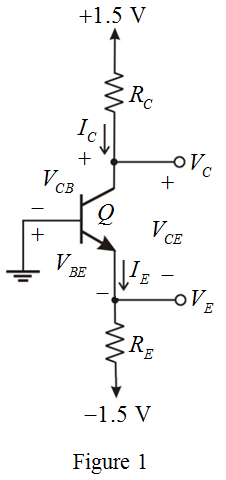

Determine the value of base-emitter voltage.
Substitute  for ,
for ,  for
for  ,
,  for
for  and
and  for in the equation.
for in the equation.
Thus, the value of base-emitter voltage,  is .
is .
Refer to Figure P6.34 in the text book.
The modified circuit diagram is shown in Figure 1.

Determine the value of base-emitter voltage.
Substitute for , for , for and for in the equation.
Thus, the value of base-emitter voltage, is .
Determine the value of collector resistance.
Substitute  for and
for and  for
for  in the equation.
in the equation.
Thus, the value of collector resistance,  is
is  .
.
Determine the value of collector-emitter voltage.
Substitute for  ,
,  for
for  and
and  for in the equation.
for in the equation.
Thus, the value of collector-emitter voltage, is .
Determine the value of emitter current.
Substitute  for
for  and
and  for
for  in the equation.
in the equation.
Thus, the value of emitter current,  is .
is .
Determine the value of emitter resistance.
Apply the Kirchhoff’s voltage law for the collector to emitter in the transistor configuration.
Substitute  for
for  ,
,  for , for and for
for , for and for  in the equation.
in the equation.
Thus, the value of emitter resistance,  is .
is .